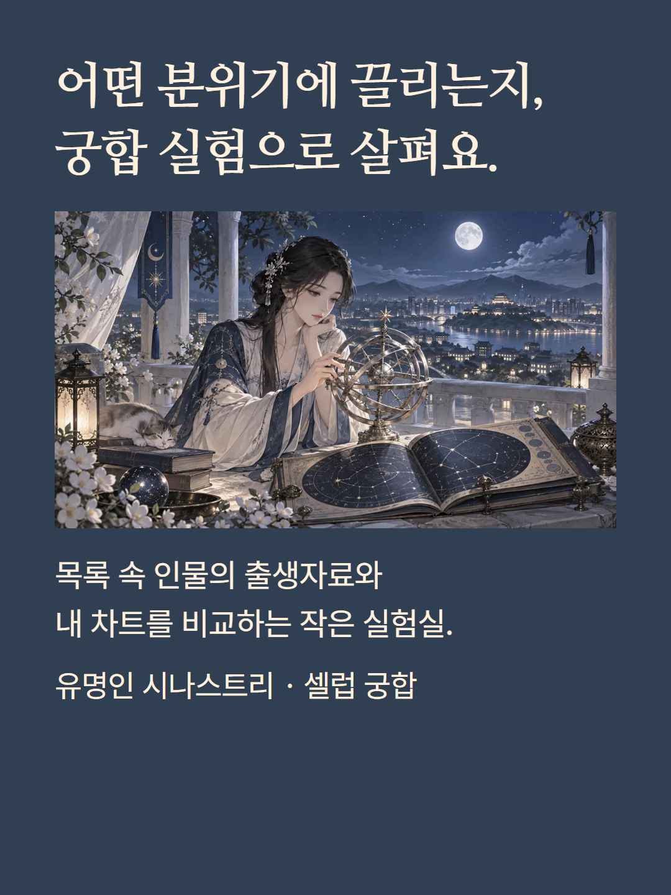
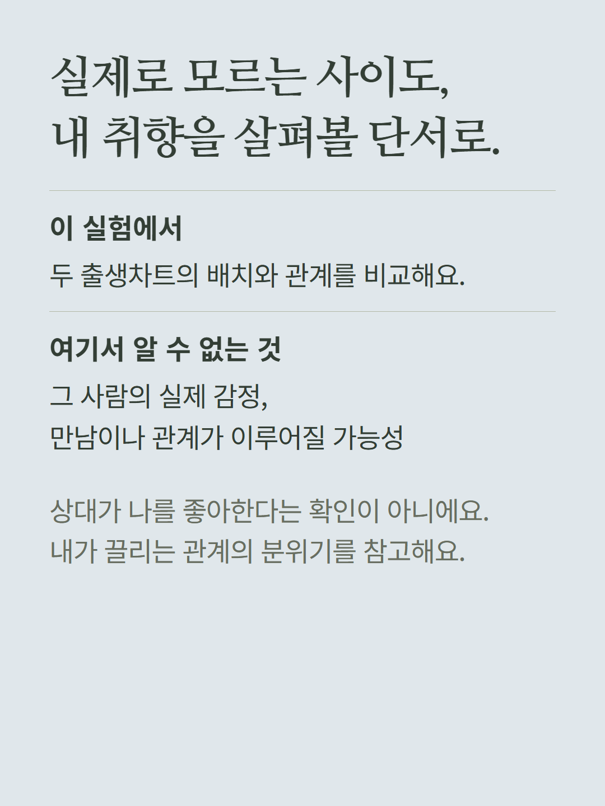
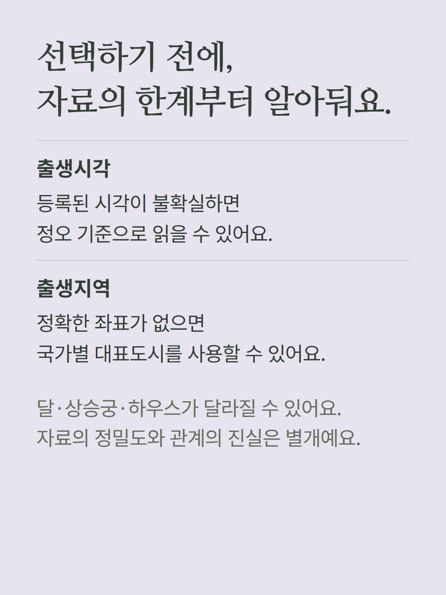
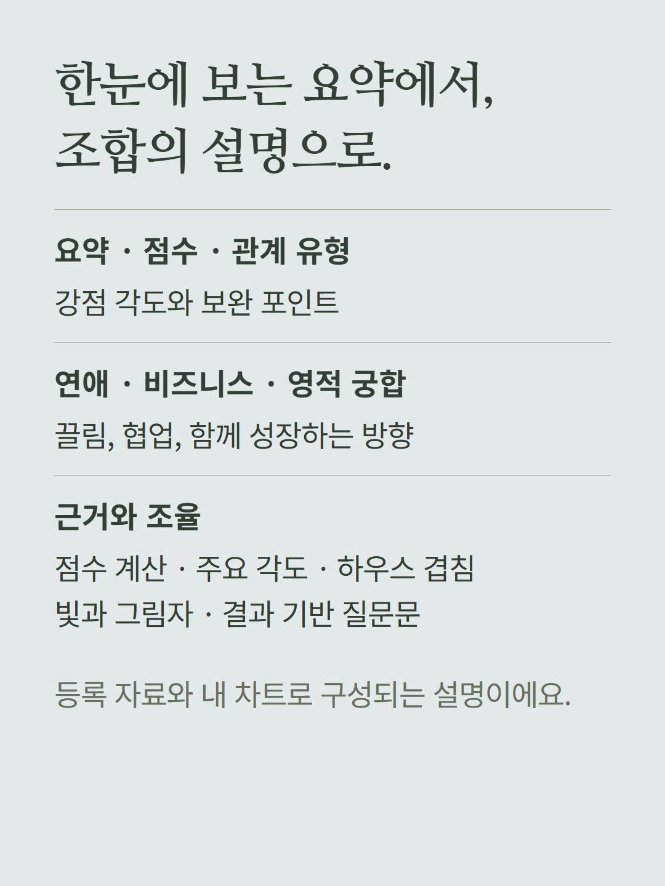
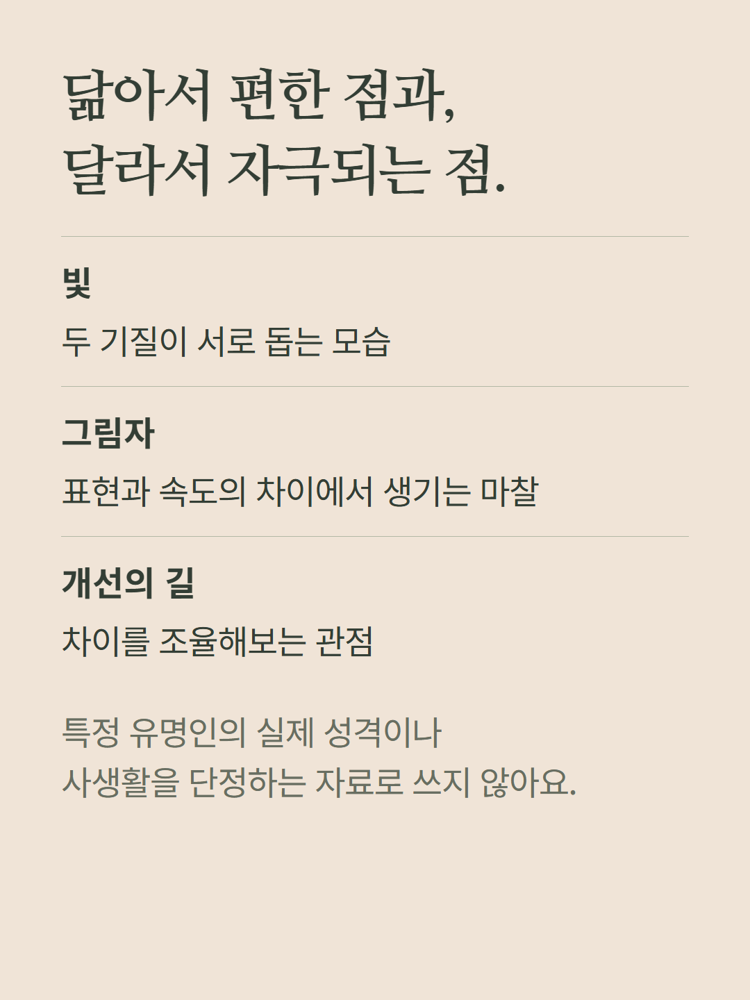
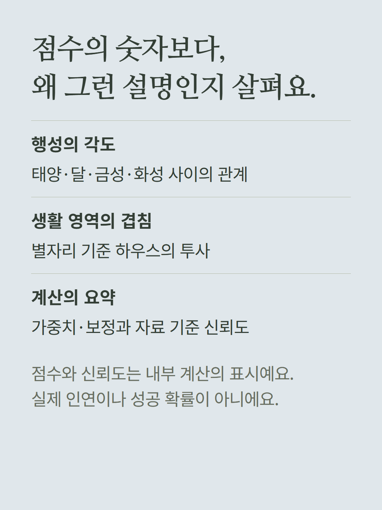
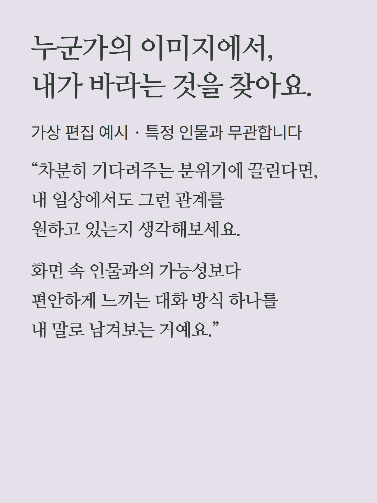
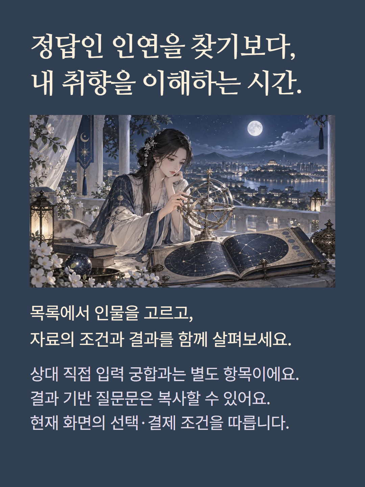

목록에서 유명인을 선택해 내 출생차트와 등록된 출생자료를 비교하는 점성술 궁합 실험실입니다. 개인의 실제 관계나 상대방의 감정을 확인하는 기능이 아닙니다. 등록된 시각이 불확실하면 정오를 사용하며 정확한 출생좌표가 없으면 국가별 대표도시를 적용할 수 있습니다. 이 한계는 달·상승궁·하우스 해석에도 영향을 줍니다. 점수·관계 유형·세 관계 해석·각도 근거·하우스 겹침·빛과 그림자와 복사 가능한 질문문을 제공합니다. 점수는 관계 성공 확률이 아닙니다. 예시는 특정 인물과 무관한 가상 편집이며 현재 화면의 가격·결제 조건을 따릅니다.